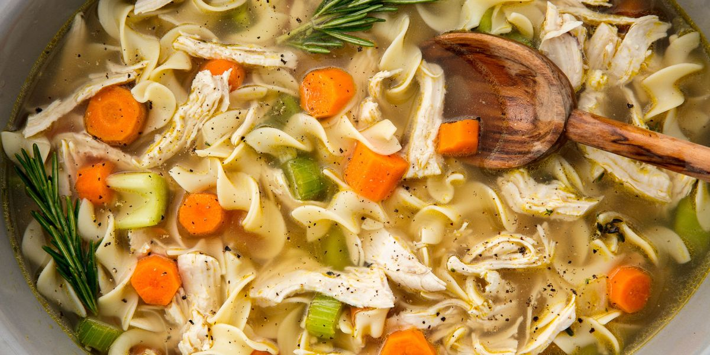

Chicken Noodle Soup

Classic chicken noodle soup that will leave you feeling so good, so warm, so cozy. Perfect for sick days and cold nights!!!
Now this recipe uses bone-in, skinless chicken breasts which means it will take a little longer than usual for the chicken to cook through.
But don’t worry, it yields the most flavorful stock and the most tender chicken bites (so it’s absolutely worth the extra time), doctored up with fresh dill and freshly squeezed lemon juice for a little bit of jazz. SO SO GOOD.
Ingredients
- 2 tablespoons unsalted butter
- 1 onion, diced
- 2 carrots, peeled and diced
- 2 celery ribs, diced
- 3 cloves garlic, minced
- 8 cups chicken stock
- 2 bay leaves
- Kosher salt freshly ground black pepper, to taste
- 2 1/2 pounds bone-in, skinless chicken breasts
- 2 1/2 cups wide egg noodles
- 2 tablespoons chopped fresh parsley leaves
- 2 tablespoons chopped fresh dill
- 1 tablespoon freshly squeezed lemon juice, or more, to taste
Steps
-
Melt butter in a large stockpot or Dutch oven over medium heat. Add onion, carrots and celery. Cook, stirring occasionally, until tender, about 3-4 minutes. Stir in garlic until fragrant, about 1 minute.
-
Stir in chicken stock and bay leaves; season with salt and pepper, to taste. Add chicken and bring to boil; reduce heat and simmer, covered, until the chicken is cooked through, about 30-40 minutes. Remove chicken and let cool before dicing into bite-size pieces, discarding bones.
-
Stir in chicken and pasta and cook until tender, about 6-7 minutes.
-
Remove from heat; stir in parsley, dill and lemon juice; season with salt and pepper, to taste.
-
Serve immediately.